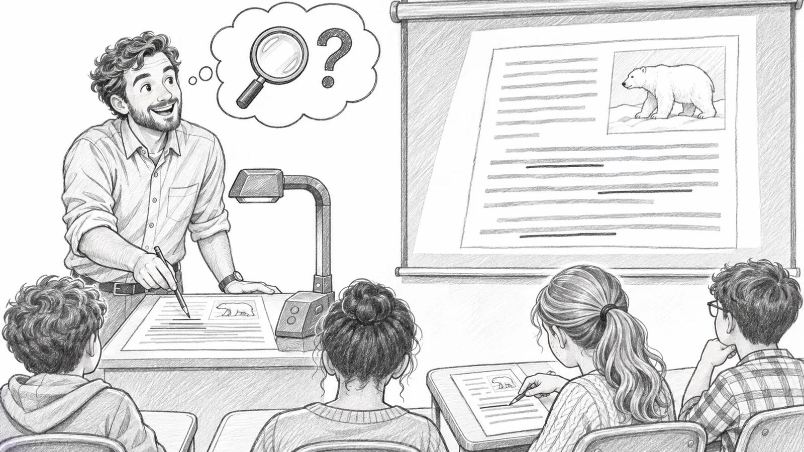
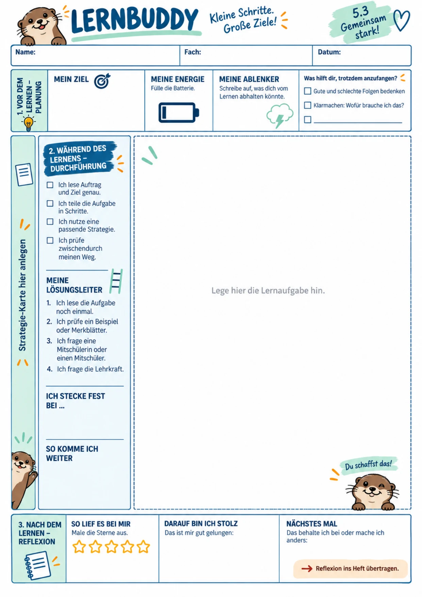
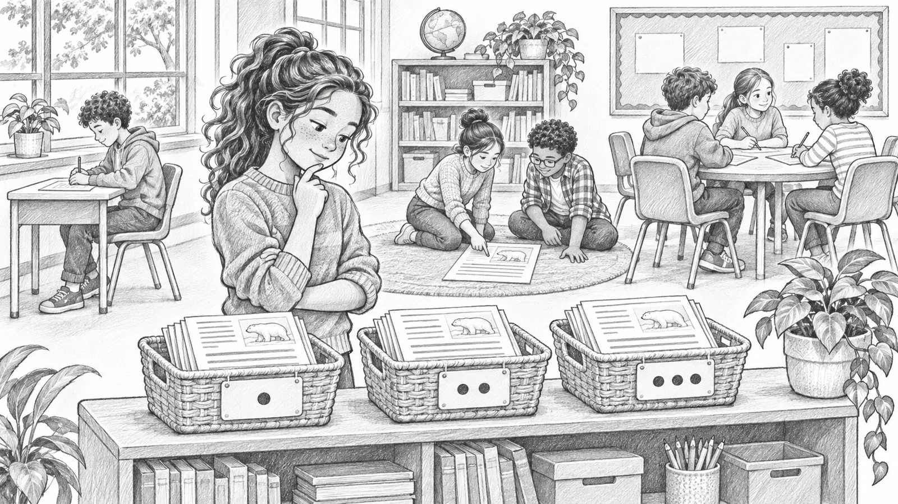

„Ich weiß, warum ich lerne, wie ich lerne – und was ich beim nächsten Mal anders machen will.“
Kurz anhalten
Welche Ebene der Turbine kommt in deinem Unterricht schon vor – und welche kaum?
Video pausieren, kurz nachdenken oder notieren – dann weiter.
4
Kapitel 4 von 5 · SRL ist keine Methode!
Vom Bildungsziel zur Praxis.
Vereinfachte Darstellung nach Karlen et al., Universität Zürich
Zurück zur These
Kein Verfahren, sondern ein Kompetenzpaket.
Lernbar – nicht angeboren.
Sechs Bereiche, die Lernende Schritt für Schritt aufbauen. Du kennst sie aus Kapitel 3.
Settings · Methoden · Prüfungsformate
Mittel, nicht Ziel.
Was wir verändern
Lernsettings und Methoden
Aufbau der Unterrichtsreihen
Prüfungsformate
Lernräume
Coaching
Worauf es zielt
Ein offenes Setting ist nicht automatisch SRL – es wirkt, wenn es gezielt einen Kompetenzbereich stärkt.
Zielt auf: Metakognition · Kognition
Denken über das Lernen.
Eine Routine, die in jeder Reihe wiederkommt.
Strategien explizit einführen und üben
Laut denken: das eigene Denken vormachen
Introspektion: das eigene Lernen beschreiben
Planung · Durchführung · Reflexion – in jeder Reihe
Gleich konkret: eine Strategie Schritt für Schritt – und wie es klingt, sie vorzumachen.
Beispiel für eine Strategie · Texte markieren (Jg. 5/6)
Handwerkszeug plus Qualitätskontrolle.
Ziel setzen Abschnitt für Abschnitt vorgehen
metakognitiv
1
Abschnitt lesen noch nichts markieren
kognitiv
2
Frage stellen „Wie und was jagt ein Eisbär?“
kognitiv
3
Markieren nur, was die Frage beantwortet
kognitiv
Überprüfen „Sind die Markierungen vollständig?“
metakognitiv
Reagieren bei Fehlern: Abschnitt noch einmal lesen
metakognitiv
Gleiches Prinzip: Experimentieren mit Je-desto-Idee · schwierige Aufgabe einteilen und Hilfsmittel nutzen
Stebner, Schiffhauer, Schmeck, Schuster, Leutner & Wirth (2015): Selbstreguliertes Lernen in den Naturwissenschaften. Praxismaterial für die 5. und 6. Jahrgangsstufe. Waxmann · pedocs.de
Laut denken · so klingt Vormachen
Unsichtbares Denken hörbar machen.

Ziel setzen
„Ich will wissen, wie der Eisbär jagt. Ich gehe Abschnitt für Abschnitt vor.“
Lesen
„Den ersten Abschnitt lese ich erst ganz. Ich markiere noch nichts.“
Frage stellen
„Meine Frage an den Abschnitt: Wie und was jagt ein Eisbär?“
Markieren
„Jetzt markiere ich nur, was meine Frage beantwortet.“
Überprüfen
„Moment – das ist zu viel markiert. Ich lese noch einmal und radiere.“
Damit daraus eine Routine wird, erproben wir:Lernbuddy · Logbuch mit Lerntagebuch
Strategie: Stebner et al. (2015) · Vormachen als Empfehlung: EEF · Formulierungen: eigenes Beispiel

Rahmengebendes Werkzeug
Der Lernbuddy.
Äußeres Gerüst → innere Routine.
Entwickelt von Prof. Joachim Wirth und Team, Ruhr-Universität Bochum – für die Klasse 5.3 von uns angepasst.
Zielt auf: Motivation · Mindset
Selbstwirksam durch Wahl.
Reihen so aufbauen, dass Lernende echte Entscheidungen treffen.
Wo arbeite ich? – Arbeitsort
Wie schnell? – eigenes Tempo
Wie schwer? – Schwierigkeitsgrad
Wahl braucht Rahmen: dosiert statt grenzenlos
Bei uns punktuell erprobt: Lernwege und Lerntheken · geöffnete Lernsettings

Zielt auf: Metakognition · Motivation
Klare Erwartungen.
Jede Reihe legt fest, was alle können müssen – und wohin es weitergeht.
für alle verbindlichMindeststandardDas können alle.
RegelstandardDas Ziel der Reihe.
LeistungsstandardDie Herausforderung für Starke.
Den Mindeststandard sichern zählt mehr als die Note.
Warum jetzt: PISA 2025 – die niedrigsten Werte, die in Deutschland je gemessen wurden; rund ein Fünftel der 15-Jährigen ohne Basiskompetenzen in allen drei Bereichen. IQB-Bildungstrend 2024 – 34 % der Neuntklässler verfehlen in Mathematik den Mindeststandard für den MSA.
Bei uns punktuell erprobt: Kompetenzraster mit drei Niveaus in jeder Reihe
OECD (2026): PISA 2025 Ergebnisse, Ländernotiz Deutschland · Deutscher Bildungsserver, Pressedossier PISA 2025 · IQB-Bildungstrend 2024 (Stanat u. a., 2025)
Zielt auf: Motivation · Mindset · Ressourcen
Prüfen, wenn es passt.
Prüfungsformate, die Selbstregulation verlangen – und belohnen.
Bin ich so weit? – sich vor dem Nachweis einschätzen
Wann bin ich bereit? – Zeitpunkt mitbestimmen
Noch nicht geschafft? – neuer Anlauf statt Endurteil
Hilfsmittel klug nutzen – als Teil der Leistung
Bei uns punktuell erprobt: Gelingensnachweise · Wahltermine · Open-Book-Arbeiten
Zielt auf: Ressourcen
Ressourcen, die passen.
Material, Hilfe und Zeit mitplanen – nicht nachträglich ergänzen.
Verlässlicher Zugang zu Aufgaben und Material
Gestufte Hilfe statt sofortiger Lösung
Zeitfenster, die eigene Planung erlauben
Bei uns punktuell erprobt: Lösungsleiter · Lernwege
Zielt auf: Ressourcen · Emotion
Der Raum als dritter Pädagoge.
Lernräume sind Ressource – und prägen, wie man sich darin fühlt.
Orientierung: Wo finde ich was, wo arbeite ich wie?
Zonen für Ruhe, Austausch und Input
Wohlbefinden: ein Ort, an dem man gern lernt
Bei uns punktuell erprobt: Lernbüro · Churer Modell